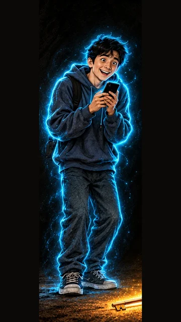

11 ta sahna. Har biri uchun: ChatGPT'da yangi chat oching, chapdagi namuna rasmni biriktiring, «Nusxa olish» bilan promptni qo'ying va o'lchamni 9:16 qiling. Har kadrda faqat 2–3 ta rang bor, ular sarlavha yonida ko'rsatilgan. Narx va raqamlarni montajda o'zimiz yozamiz, shuning uchun rasmda yorliqlar bo'sh bo'ladi. Veo promptlari rasmlar tasdiqlangach shu sahifaga qo'shiladi.
01
1-sahna — 9:16 (tik)
0–6 ssariqto'q ko'kqizil
✅ tasdiqlandi · Apple belgilari tozalandi (img/s01.png)
Usta yuzi namunadek (do'ppi, qora soqol, chopon, qizil belbog'), qo'llari yosh, ikki qo'l: biri ko'rsatadi, biri pastda. Sariq yorliq va qizil yorliq bo'sh. Orqada Toshkent teleminorasi. Ranglar: sariq, ko'k, qizil. ChatGPT tahriri belgilarni olib tashlamadi; Claude ularni o'zi tozaladi (OpenCV inpaint). Veo'ga img/s01.png beriladi.
Shu rasmni biriktiring:
ref_usta.png
Ovoz
Usta: Oyiga atigi yuz ming. Lekin jami qanchaligini hech kim aytmadi.
Rasm prompti (ChatGPT, 9:16)
Attach the reference image of Usta. Keep every character exactly as in the reference image: the same face, age, hair, beard, clothes and props. Scene 1, vertical 9:16. Wide shot of a small phone shop on an evening street in Tashkent, a glass shop window with phones on shelves. In the window hangs a big empty price card with nothing written on it (blank, we add the numbers later), huge and glowing warm golden yellow like a sign; under it a tiny red card, also blank. USTA (the calm man about 30 years old with a short jet-black beard, black-and-white Uzbek doppi skullcap, dark embroidered chapan robe with a red sash; his hands are the young strong hands of a 30-year-old man, smooth skin, no wrinkles, no swollen veins) stands in front of the window, turned to the camera with a calm, knowing half-smile, one hand pointing at the tiny red card, the other hand relaxed at his side. The street around is deep night blue. Every person has exactly two arms and two hands, every hand clearly belongs to its own arm and shoulder, no hand does two things at once. Style: the same hand-painted illustration style as the reference images (painterly ink and paint, visible brush texture, cinematic light), but colourful and eye-catching. Colour rule: the whole frame uses ONLY 3 main colours: warm golden yellow, deep night blue and rich red; everything else is soft dark neutral shadow. Strong, saturated, glowing colour light, no rainbow, no other bright colours. Vertical 9:16. No text, no letters, no numbers, no logos, no watermark, no subtitles.
02
2-sahna — 9:16 (tik)
6–12 ssariqmoviy
✅ tasdiqlandi · Apple belgilari tozalandi (img/s02.png)
Diyor yuzi namunadek (to'zg'igan soch, katta ko'zlar, xudi, moviy nur, sumka tasmasi), telefon ikki qo'lida. Ranglar: sariq, moviy. ChatGPT tahriri belgilarni olib tashlamadi; Claude vitrinadagi belgilarni o'zi tozaladi (OpenCV inpaint), qo'lidagi telefonda belgi yo'q. Veo'ga img/s02.png beriladi.
Shu rasmni biriktiring:

ref_diyor.png
Ovoz
Diyor: Usta, oyiga atigi yuz ming ekan! Bemalol olaman.
Rasm prompti (ChatGPT, 9:16)
Attach the reference image of Diyor. Keep every character exactly as in the reference image: the same face, age, hair, beard, clothes and props. Scene 2, vertical 9:16. Medium shot of DIYOR (the naive guy about 20 years old with messy black hair, big innocent eyes, dark blue hoodie, jeans and sneakers, outlined with a soft cyan-blue glow) in front of the glowing golden shop window, overjoyed, mouth open in a big happy smile, eyes shining, holding a new shiny smartphone in both hands close to his chest like a treasure. Warm golden light from the window falls on his face; his own cyan-blue glow around him. Every person has exactly two arms and two hands, every hand clearly belongs to its own arm and shoulder, no hand does two things at once. Style: the same hand-painted illustration style as the reference images (painterly ink and paint, visible brush texture, cinematic light), but colourful and eye-catching. Colour rule: the whole frame uses ONLY 2 main colours: warm golden yellow and bright cyan-blue; everything else is soft dark neutral shadow. Strong, saturated, glowing colour light, no rainbow, no other bright colours. Vertical 9:16. No text, no letters, no numbers, no logos, no watermark, no subtitles.
03
3-sahna — 9:16 (tik)
12–17 sto'q sariqqizil
✅ tasdiqlandi (tahrirdan keyin) · Apple belgilari tozalandi (img/s03.png)
Kiyim, do'ppi, lupa, qizil yorliq, ranglar (to'q sariq, qizil) to'g'ri. Xato: ikkala qo'li qari (ajin, bo'rtgan tomirlar, chuqur bo'g'im chiziqlari), yuzida peshona ajinlari va ko'z atrofida chiziqlar — ~40 yoshdek. Tahrirdan keyin: ikkala qo'l yosh (silliq teri, tomir yo'q), yuz namunaga yaqin (qoshini ko'targani uchun peshonada yengil chiziq). 2 ta Apple belgisini Claude tozaladi. Veo'ga img/s03.png beriladi.
Shu rasmni biriktiring:
ref_usta.png
Ovoz
Usta: Necha oyga? Jami qancha to'laysan?
Rasm prompti (ChatGPT, 9:16)
Attach the reference image of Usta. Keep every character exactly as in the reference image: the same face, age, hair, beard, clothes and props. Scene 3, vertical 9:16. Close-up of USTA (the calm man about 30 years old with a short jet-black beard, black-and-white Uzbek doppi skullcap, dark embroidered chapan robe with a red sash; his hands are the young strong hands of a 30-year-old man, smooth skin, no wrinkles, no swollen veins) holding a big round brass magnifying glass in his right hand over the tiny red blank card in the shop window; his left hand rests on the window frame. Through the glass the small red card looks large and glows red. Warm orange light from a street lamp on his calm face; he raises one eyebrow. Every person has exactly two arms and two hands, every hand clearly belongs to its own arm and shoulder, no hand does two things at once. Style: the same hand-painted illustration style as the reference images (painterly ink and paint, visible brush texture, cinematic light), but colourful and eye-catching. Colour rule: the whole frame uses ONLY 2 main colours: glowing orange and rich red; everything else is soft dark neutral shadow. Strong, saturated, glowing colour light, no rainbow, no other bright colours. Vertical 9:16. No text, no letters, no numbers, no logos, no watermark, no subtitles.
04
4-sahna — 9:16 (tik)
17–25 sto'q ko'ksariq
✅ tasdiqlandi (img/s04.png)
Diyor yuzi namunadek (to'zg'igan soch, katta ko'zlar, xudi, sumka, moviy nur). Qo'llar yosh: o'ng qo'lda 5 barmoq ochiq, chap qo'l ko'rsatkich barmog'i bilan sanaydi. Ranglar: ko'k, sariq. Tangalar 12 emas, 11 ta (boshi orqasida bo'shliq) — tomoshabin sanamaydi; Veo'da tangalar birma-bir yonadi, shu yashiradi. Telefon, belgi, yozuv yo'q.
Shu rasmni biriktiring:
ref_diyor.png
Ovoz
Diyor: Yuz ming… o'n ikki oy… bir million ikki yuz ming.
Rasm prompti (ChatGPT, 9:16)
Attach the reference image of Diyor. Keep every character exactly as in the reference image: the same face, age, hair, beard, clothes and props. Scene 4, vertical 9:16. DIYOR (the naive guy about 20 years old with messy black hair, big innocent eyes, dark blue hoodie, jeans and sneakers, outlined with a soft cyan-blue glow) counts on his fingers, both hands in front of him, lips moving, eyes looking up in surprise. Around his head twelve small glowing golden coins float in a circle, one for each finger he counts; they have no writing on them. Deep night blue background. Every person has exactly two arms and two hands, every hand clearly belongs to its own arm and shoulder, no hand does two things at once. Style: the same hand-painted illustration style as the reference images (painterly ink and paint, visible brush texture, cinematic light), but colourful and eye-catching. Colour rule: the whole frame uses ONLY 2 main colours: deep night blue and warm golden yellow; everything else is soft dark neutral shadow. Strong, saturated, glowing colour light, no rainbow, no other bright colours. Vertical 9:16. No text, no letters, no numbers, no logos, no watermark, no subtitles.
05
5-sahna — 9:16 (tik)
25–30 ssariqqizil
✅ qabul qilindi (tahrirdan keyin, img/s05.png)
Yuz namunaga yaqin, do'ppi, chopon, belbog' to'g'ri. 2 ta qizil tanga ustun tepasida, ustun telefon qutisidan baland. Ranglar: sariq, qizil. Qutidagi telefonda belgi yo'q. Kamchilik: tangani ushlagan o'ng qo'l va peshtaxtadagi chap qo'lda bo'g'imlar chuqur burishgan, 30 yoshdan qariroq. Tahrirdan keyin (v2) teri biroz silliqlashdi, bo'g'im burmalari kamaydi, lekin to'liq yo'qolmadi — 7-sahnadagi qo'l bilan bir xil darajada, qabul qilindi.
Shu rasmni biriktiring:
ref_usta.png
Ovoz
Usta: Bunga boshlang'ich to'lov, xizmat haqi qo'shilsa-chi?
Rasm prompti (ChatGPT, 9:16)
Attach the reference image of Usta. Keep every character exactly as in the reference image: the same face, age, hair, beard, clothes and props. Scene 5, vertical 9:16. On a wooden shop counter stands a tall column of golden coins; USTA (the calm man about 30 years old with a short jet-black beard, black-and-white Uzbek doppi skullcap, dark embroidered chapan robe with a red sash; his hands are the young strong hands of a 30-year-old man, smooth skin, no wrinkles, no swollen veins) calmly places two more glowing red coins on top of it with his right hand, his left hand resting on the counter. The column is taller than the phone box lying next to it. Dark background, golden and red light only. Every person has exactly two arms and two hands, every hand clearly belongs to its own arm and shoulder, no hand does two things at once. Style: the same hand-painted illustration style as the reference images (painterly ink and paint, visible brush texture, cinematic light), but colourful and eye-catching. Colour rule: the whole frame uses ONLY 2 main colours: warm golden yellow and rich red; everything else is soft dark neutral shadow. Strong, saturated, glowing colour light, no rainbow, no other bright colours. Vertical 9:16. No text, no letters, no numbers, no logos, no watermark, no subtitles.
06
6-sahna — 9:16 (tik)
30–37 ssariqto'q ko'k
✅ tasdiqlandi · Apple belgilari tozalandi (img/s06.png)
Diyor yuzi namunadek, bir qo'li boshida, biri telefonda; nuri xira. Ifodasi «uyalib jilmayish» (to'liq uyalgan emas) — Veo promptida uyalib pastga qarashi yoziladi. Sotuvchi: yumaloq yuz, qalin mo'ylov, yashil jilet, yuzi Usta va Diyornikidan butunlay boshqa; yorliqni ikki qo'llab ushlagan, yorliq bo'sh. Ranglar: sariq, ko'k. Pastki javondagi 11 ta Apple belgisi va mayda yozuvni Claude tozaladi.
Shu rasmni biriktiring:
ref_diyor.png
Ovoz
Diyor: Sotuvchi faqat oylik to'lovni aytdi. Naqd narxini so'ramabman.
Rasm prompti (ChatGPT, 9:16)
Attach the reference image of Diyor. Keep every character exactly as in the reference image: the same face, age, hair, beard, clothes and props. Scene 6, vertical 9:16. Inside the phone shop. Behind the counter a cheerful SELLER (a fictional Uzbek man about 40, round face, thick black moustache, short hair, white shirt and a dark green shop vest; his face is clearly different from Usta and from Diyor) holds a big empty price card with nothing written on it (blank, we add the numbers later) up in front of his chest with both hands and smiles widely. In the foreground DIYOR (the naive guy about 20 years old with messy black hair, big innocent eyes, dark blue hoodie, jeans and sneakers, outlined with a soft cyan-blue glow) scratches the back of his head with one hand, embarrassed, his other hand holding the phone; his cyan glow is dim. Warm golden light behind the counter, deep blue shadows in front. Every person has exactly two arms and two hands, every hand clearly belongs to its own arm and shoulder, no hand does two things at once. Style: the same hand-painted illustration style as the reference images (painterly ink and paint, visible brush texture, cinematic light), but colourful and eye-catching. Colour rule: the whole frame uses ONLY 2 main colours: warm golden yellow and deep night blue; everything else is soft dark neutral shadow. Strong, saturated, glowing colour light, no rainbow, no other bright colours. Vertical 9:16. No text, no letters, no numbers, no logos, no watermark, no subtitles.
07
7-sahna — 9:16 (tik)
37–44 ssariqqizilto'q ko'k
✅ tasdiqlandi (img/s07.png)
Usta yuzi namunadek. Tarozi: chap pallada kichik oltin ustun (naqd narx), o'ng pallada katta oltin+qizil uyum, o'ng palla pastroq. O'ng qo'li taroziga ishora qiladi, chap qo'li pastda; qo'llar yosh (barmoq bukilganda bo'g'imda oddiy burmalar). Ranglar: sariq, qizil, ko'k. Orqadagi telefonlarda belgi ko'rinmaydi.
Shu rasmni biriktiring:
ref_usta.png
Ovoz
Usta: Kichik bo'lingan narx katta summani yashiradi. Ikkalasini yonma-yon qo'y.
Rasm prompti (ChatGPT, 9:16)
Attach the reference image of Usta. Keep every character exactly as in the reference image: the same face, age, hair, beard, clothes and props. Scene 7, vertical 9:16. A big old brass balance scale stands on the counter. On the left pan a small neat stack of golden coins (the cash price); on the right pan a much bigger pile of golden and red coins, so the right pan hangs lower. USTA (the calm man about 30 years old with a short jet-black beard, black-and-white Uzbek doppi skullcap, dark embroidered chapan robe with a red sash; his hands are the young strong hands of a 30-year-old man, smooth skin, no wrinkles, no swollen veins) stands beside it and points at the scale with his right hand, explaining, his left hand at his side. Deep blue background. Every person has exactly two arms and two hands, every hand clearly belongs to its own arm and shoulder, no hand does two things at once. Style: the same hand-painted illustration style as the reference images (painterly ink and paint, visible brush texture, cinematic light), but colourful and eye-catching. Colour rule: the whole frame uses ONLY 3 main colours: warm golden yellow, rich red and deep night blue; everything else is soft dark neutral shadow. Strong, saturated, glowing colour light, no rainbow, no other bright colours. Vertical 9:16. No text, no letters, no numbers, no logos, no watermark, no subtitles.
08
8-sahna — 9:16 (tik)
44–54 ssariqto'q ko'kqizil
✅ tasdiqlandi (img/s08.png)
Usta yuzi namunadek. O'ng qo'lda aniq 3 barmoq ochiq (bosh barmoq jimjiloqni ushlagan), chap qo'l pastda; ikkalasi yosh. Tepada 3 belgi: sariq tanga, ko'k chek (o'qib bo'lmaydigan chiziqlar, harf yo'q), qizil qum soat. Ranglar: sariq, ko'k, qizil.
Shu rasmni biriktiring:
ref_usta.png
Ovoz
Usta: Uchta savol ber. Naqd narxi qancha? Jami qancha to'layman? Kechiksam nima bo'ladi?
Rasm prompti (ChatGPT, 9:16)
Attach the reference image of Usta. Keep every character exactly as in the reference image: the same face, age, hair, beard, clothes and props. Scene 8, vertical 9:16. USTA (the calm man about 30 years old with a short jet-black beard, black-and-white Uzbek doppi skullcap, dark embroidered chapan robe with a red sash; his hands are the young strong hands of a 30-year-old man, smooth skin, no wrinkles, no swollen veins) faces the camera and holds up three fingers of his right hand; his left hand at his side. Above his hand float three glowing symbols in a row, with no writing on them: a single golden coin, a rolled blue paper receipt, a small red hourglass. Deep night blue background. Every person has exactly two arms and two hands, every hand clearly belongs to its own arm and shoulder, no hand does two things at once. Style: the same hand-painted illustration style as the reference images (painterly ink and paint, visible brush texture, cinematic light), but colourful and eye-catching. Colour rule: the whole frame uses ONLY 3 main colours: warm golden yellow, deep night blue and rich red; everything else is soft dark neutral shadow. Strong, saturated, glowing colour light, no rainbow, no other bright colours. Vertical 9:16. No text, no letters, no numbers, no logos, no watermark, no subtitles.
09
9-sahna — 9:16 (tik)
54–58 smoviysariq
Shu rasmni biriktiring:
ref_diyor.png
Ovoz
Diyor: Shoshilmayman. Avval hisoblab ko'raman.
Rasm prompti (ChatGPT, 9:16)
Attach the reference image of Diyor. Keep every character exactly as in the reference image: the same face, age, hair, beard, clothes and props. Scene 9, vertical 9:16. DIYOR (the naive guy about 20 years old with messy black hair, big innocent eyes, dark blue hoodie, jeans and sneakers, outlined with a soft cyan-blue glow) calmly puts the smartphone back on the glowing shop shelf with one hand and smiles a relaxed, clever smile; his other hand holds a small paper notebook and a pencil. His cyan-blue glow is bright and steady again. Warm golden shelf light. Every person has exactly two arms and two hands, every hand clearly belongs to its own arm and shoulder, no hand does two things at once. Style: the same hand-painted illustration style as the reference images (painterly ink and paint, visible brush texture, cinematic light), but colourful and eye-catching. Colour rule: the whole frame uses ONLY 2 main colours: bright cyan-blue and warm golden yellow; everything else is soft dark neutral shadow. Strong, saturated, glowing colour light, no rainbow, no other bright colours. Vertical 9:16. No text, no letters, no numbers, no logos, no watermark, no subtitles.
10
10-sahna — 9:16 (tik)
58–65 sto'q sariqto'q ko'k
Shu rasmni biriktiring:
ref_usta.png
Ovoz
Usta: «Oyiga atigi» degandan keyin bitta savol qoladi: oxirida jami qancha?
Rasm prompti (ChatGPT, 9:16)
Attach the reference image of Usta. Keep every character exactly as in the reference image: the same face, age, hair, beard, clothes and props. Scene 10, vertical 9:16. Close-up portrait of USTA (the calm man about 30 years old with a short jet-black beard, black-and-white Uzbek doppi skullcap, dark embroidered chapan robe with a red sash; his hands are the young strong hands of a 30-year-old man, smooth skin, no wrinkles, no swollen veins) looking straight into the camera with a warm, wise smile. Warm orange street-lamp light on one side of his face, deep night blue on the other side. His hands are not in the frame. Style: the same hand-painted illustration style as the reference images (painterly ink and paint, visible brush texture, cinematic light), but colourful and eye-catching. Colour rule: the whole frame uses ONLY 2 main colours: glowing orange and deep night blue; everything else is soft dark neutral shadow. Strong, saturated, glowing colour light, no rainbow, no other bright colours. Vertical 9:16. No text, no letters, no numbers, no logos, no watermark, no subtitles.
11
11-sahna — 9:16 (tik)
65–76 sto'q ko'ksariqzumrad
Shu rasmni biriktiring:
ref_usta.pngref_diyor.png
Ovoz
Usta: Narx yorlig'i yoki shartnoma suratini botimizga yuboring: @sahiychishopbot…
Rasm prompti (ChatGPT, 9:16)
Attach the reference images of Usta and Diyor. Keep every character exactly as in their reference images: the same face, age, hair, beard, clothes and props. Scene 11, vertical 9:16. Medium shot. USTA (the calm man about 30 years old with a short jet-black beard, black-and-white Uzbek doppi skullcap, dark embroidered chapan robe with a red sash; his hands are the young strong hands of a 30-year-old man, smooth skin, no wrinkles, no swollen veins) holds a smartphone toward the camera with his right hand; the screen glows emerald teal with a chat: a photo of a blank golden price card and a few empty message bubbles, no readable text. His left hand rests on the shoulder of DIYOR (the naive guy about 20 years old with messy black hair, big innocent eyes, dark blue hoodie, jeans and sneakers, outlined with a soft cyan-blue glow), who stands beside him and gives a thumbs up with one hand. Warm golden shop light behind them, deep blue shadows. Leave empty dark space in the top third of the frame for a title. Every person has exactly two arms and two hands, every hand clearly belongs to its own arm and shoulder, no hand does two things at once. Style: the same hand-painted illustration style as the reference images (painterly ink and paint, visible brush texture, cinematic light), but colourful and eye-catching. Colour rule: the whole frame uses ONLY 3 main colours: deep night blue, warm golden yellow and emerald teal; everything else is soft dark neutral shadow. Strong, saturated, glowing colour light, no rainbow, no other bright colours. Vertical 9:16. No text, no letters, no numbers, no logos, no watermark, no subtitles.